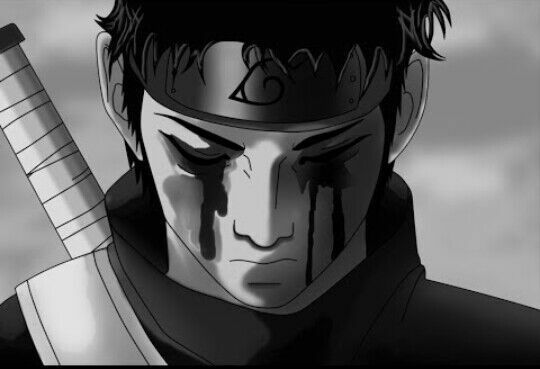
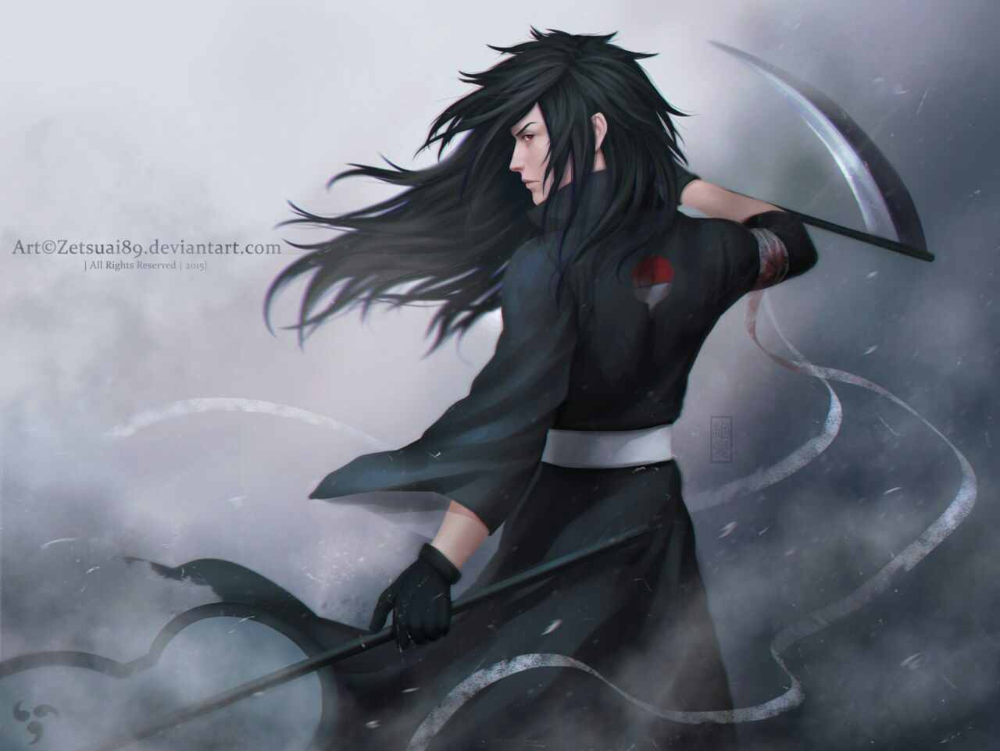
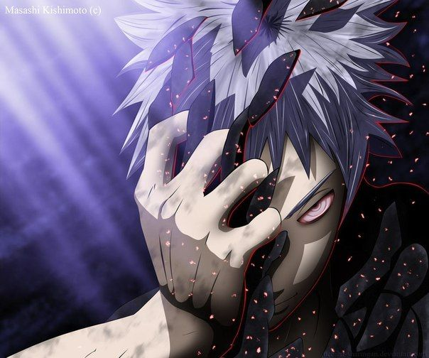
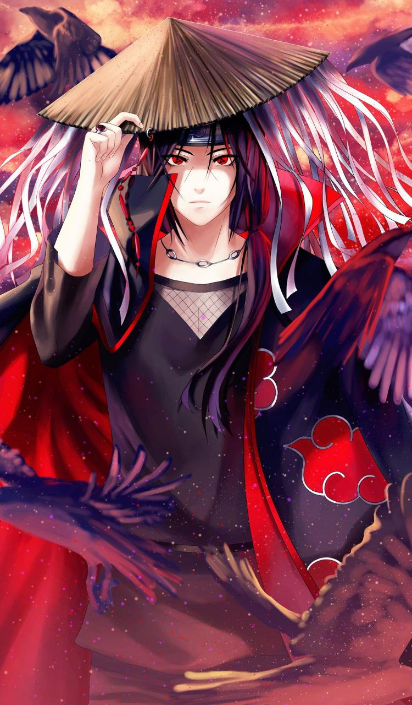

Наруто (яп. NARUTO - ナルト -) — манга Масаси Кисимото в жанре сёнэн. Главным её героем является Наруто Удзумаки, шумный и непоседливый ниндзя-подросток, который мечтает достичь всеобщего признания и стать Хокагэ — главой своего селения и сильнейшим ниндзя. Чтобы добиться уважения окружающих, ему предстоит пройти через тысячи препятствий: экзамены ниндзя, различные миссии и сражения. Выпускалась с 21 сентября 1999 года по 10 ноября 2014 года японским издательством Shueisha в журнале Weekly Shonen Jump. Объединена в 72 танкобона. По манге снят одноимённый аниме-телесериал, созданный компаниями Aniplex и Studio Pierrot. Первый телесериал, Naruto, демонстрировался в Японии по каналу TV Tokyo и спутниковому каналу Animax начиная с 3 октября 2002 года по 8 февраля 2007 года и закончился 220-ой серией. Второй телесериал, Наруто Сиппудэн, транслировался с 15 февраля 2007 года по 23 марта 2017 года и закончился 500-ой серией. С момента начала трансляции в эфир вышло свыше 700 серий. В аниме-экранизацию входят два телесериала, одиннадцать анимационных фильмов и восемь OVA. На основе манги и аниме были созданы также видеоигры, романы («лайт-новел») и коллекционная карточная игра. Манга и аниме оказались очень популярны как в Японии, так и за её пределами. На момент выхода 72-го тома, продажи которого составили 1 204 000 экземпляров — стало известно, что суммарные продажи томов превысили 205 миллионов экземпляров. В США манга «Наруто», лицензированная издательством Viz Media, регулярно попадает в списки бестселлеров, а в 2006 году её продажи составили почти 10 % всех продаж манги в этой стране. В России права на издание и распространение манги принадлежат компаниям «Эксмо» и «Комикс-Арт». Распространением аниме на территории СНГ занималась «МегаСистем»
   Главный герой серии, подросток Наруто Удзумаки, является носителем девятихвостого демона-лиса, запечатанного в его теле. За двенадцать лет до начала событий, излагаемых в манге, демон-лис напал на Деревню, скрытую в листве (яп. 木ノ葉隠れの里 Конохагакурэ но сато, или просто Коноха), родную деревню Наруто. Ради спасения Конохи Четвёртый Хокагэ, глава селения, пожертвовал жизнью, чтобы запечатать дух зверя внутри своего новорождённого сына Наруто. Хокагэ желал, чтобы люди считали Наруто героем, поскольку отныне он сдерживал мощь девятихвостого лиса, однако население деревни восприняло Наруто как демона во плоти и возненавидело его. Поскольку упоминать об атаке лиса было запрещено, Наруто узнал о своей необычности лишь случайно, годы спустя.